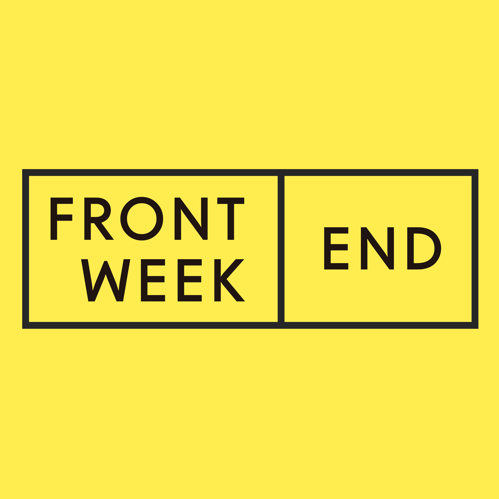

Карьерный рост без строчки кода, или почему важны софт скиллы
Андрей Смирнов (@sandark7)

Андрей Смирнов (@sandark7)



junior_importance = jun - mid - sen - tl - no_need
middle_importance = jun + mid - sen - tl - no_need
senior_importance = jun + mid + sen - tl - no_need
teamlead_importance = jun + mid + sen + tl - no_need


Андрей Смирнов (@sandark7)